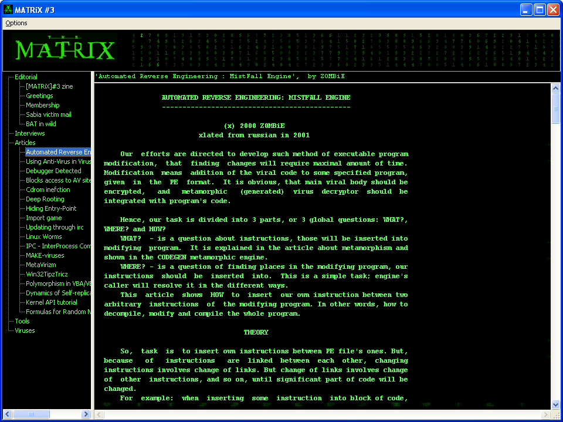

MATRiX e-zine III
Editional
MATRiX#3
Greetings
Membership
Sabia victims mail
Bat in wild (avp description :)
Disclaimer
Articles
Automated Reverse Engineering : MistFall Engine
Using Anti-Virus in Viru
Blocks access to AV sites
Cdrom infection
Debugger Detected
Deep Rooting
Hiding Entry-Point
Import game
Updating through irc
Linux Worms
IPC - InterProcess Communications
MAKE-viruses
MetaVirizm
Win32Tipz&Tricz
Polymorphism in VBA/VBS virii
Dynamics of Self-replicating code behavior
Kernel API tutorial
Formulas for Random Number Generators
Interviews
Interview with Black Jack
Interview with BumbleBee
Interview with HenKy
Interview with Mandragore
Interview with Stormbringer
Interview with Lord Julus
Interview with Ratter/29a
Interview with Cyph3r
Interview with Yello
Viruses
Win95.Palletok
Win95.Tecata
TXTVir
I-Worm.Poetry
XmsVirus
Win32.Sadorom
Win32.Totenkopf
Win95.WinMulti
Win32.Simple
Win32.Life
Win32.Silencer
Win32.Kaido
ArchiverX
HaVirus
WM97.Nihilit
Invert
XP.tijor
Win32.Ikarus
Win32.Cell
Win95.Crucifax
Win.Tentacle diss
Win32.Kuto
Win32.Sin
Win95.Kante
XP.FirstLife
DOC6 infector
Vlasov
Win32.Insane
Win32.Yonggary!
Win32.Integrator
I-Worm.Dawn
Celine
VBS.SuperFlous
DaCryptic
VBS.Hatred
JS.3Nokia
XP.Kallisti
MistFall.Z0MBiE-10.c
Tools
Pointbat Compression Engine
Schadenfreude
Deviator's Morphing Engine
MATRiX#2 Demo
Ultra Lempel-Ziv
